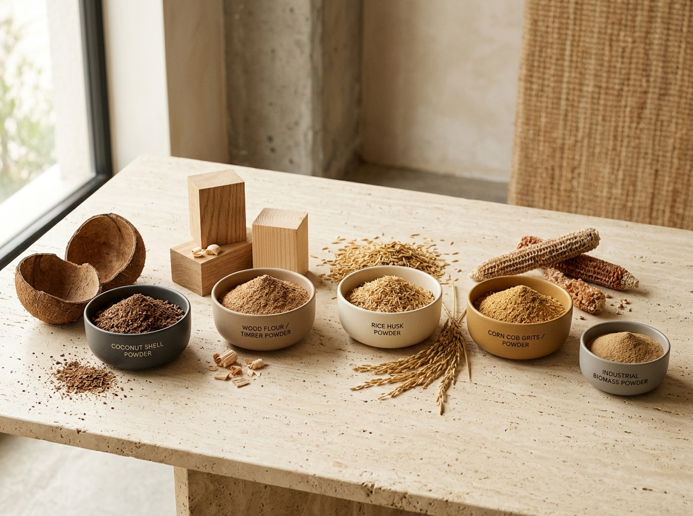

Mitra Manufaktur Serbuk Biomassa & Hasil Agro Terpercaya
CV ADC TANJAYA hadir untuk menjawab kebutuhan pabrik dan industri pengolahan di Indonesia akan pasokan tepung industri (non-pangan) yang stabil, bersih, dan konsisten. Kami mengolah berbagai komoditas biomassa seperti batok kelapa, kayu pilihan, onggok singkong, sekam padi, kulit kopi, kulit kacang tanah, dan bonggol jagung menjadi serbuk fungsional bernilai tambah tinggi.
Berbeda dari komoditas mentah yang belum terstandarisasi, setiap produk yang keluar dari fasilitas penggilingan CV ADC TANJAYA telah melewati proses pengeringan terukur dan pemisahan ayakan (mesh) yang ketat. Hal ini memastikan bahan baku siap langsung masuk ke jalur pencampuran atau mesin produksi pembeli tanpa menghambat efisiensi operasional.

Menjadi Produsen Tepung Industri Berbasis Biomassa Terdepan & Paling Andal di Indonesia
Menghadirkan standar baru dalam pengolahan hasil samping agro dan biomassa melalui presisi teknologi penggilingan, konsistensi mutu antar-batch, serta kemitraan jangka panjang yang saling menguntungkan bagi sektor industri nasional.
Empat Komitmen Utama Kami
- Menjaga presisi ukuran partikel (mesh) dan stabilitas kadar air sesuai spesifikasi teknis tiap pabrik pembeli.
- Membangun rantai pasok bahan baku biomassa yang berkelanjutan dan memberdayakan sentra agro lokal.
- Menyediakan layanan formulasi khusus (custom blend) untuk mendukung inovasi dan efisiensi biaya R&D mitra.
- Menjamin ketepatan jadwal pengiriman dan ketersediaan stok penyangga bagi kontrak industri rutin.
Siap Bermitra dengan CV ADC TANJAYA?
Jelajahi katalog lengkap produk tepung industri kami atau hubungi tim B2B kami untuk berdiskusi mengenai kebutuhan pabrik Anda.